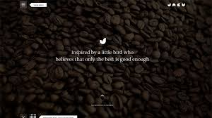
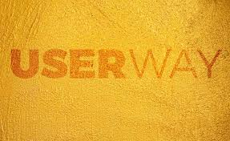
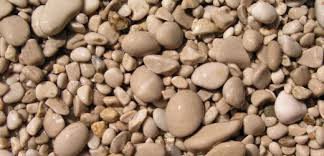

Projects
What The Stock
A stock photos site with only weird or unique photos. Crying clowns, abandoned malls, giant wicker chairs… that sort of thing.
Promo Club
Social network where people submit things they've created like articles they've written, products they've released, or YouTube videos. You view a list of them and promote the ones you like on your social media accounts. More promotions of other people's stuff buys your own posts a higher position on the site.
CheLIMB ON

A daily “exercise” app for entrepreneurs. Instead of a physical workout, this gets users to step outside their comfort zones through one activity per day. This helps build the risk-taking muscles entrepreneurs need and erodes their fear of rejection.
Note Log
A notes app with multiple entries per note. When the user launches the app, they select a note. This adds a new entry for that note automatically tagged with the current date, time, and location. Entries can be sorted and filtered on this metadata. Great for resolving messy problems and tracking what you did.
TIMELESS

The social network that only lets each user post once per year. Better make it good!
The FAM
The Fam does this for families, getting them communicating😉, learning more about one another, and becoming closer through smart, engaging prompts.